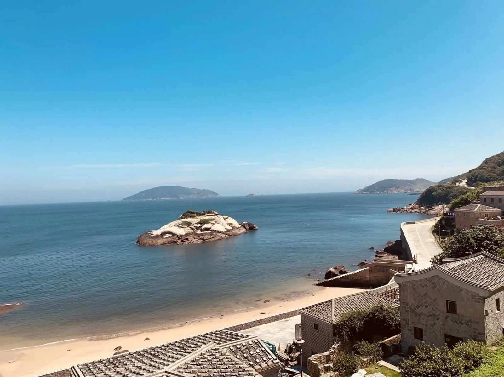

三天兩夜｜南竿・北竿
饗趣馬祖 南北竿三日遊
第一次來馬祖，就從這條走起。坑道裡搖一段櫓，芹壁的石階坐一個下午，晚上吃一桌海鮮痛風餐，再出海找藍眼淚。
第二天：戰爭和平紀念館、短坡山、芹壁聚落＋下午茶
來電報價看三天怎麼走

四條三日遊，從台北出發。第二天各去一座不同的島。
每一條都從南北竿出發，第二天分別去大坵、東引、東莒，或留在南北竿慢慢走。機票、兩晚住宿、2 早 5 正餐都包含，第二晚是海鮮痛風餐配藍眼淚葡萄酒。
台中—馬祖來回機票，行程與南北竿三日遊相同，8 人成行。115 年 10 月至 12 月版本不含出海追藍眼淚與日間搖櫓。出發日請來電確認。
學校、公司、社團都可以包團。天數、島嶼、餐標、住宿都能調整，南北竿接東西莒、東引、大坵的多日行程，我們也排過。
旅行社同業需要馬祖地接，也歡迎來電。
團體行程不在網站標價，價格看出發日、平假日、航班和人數。打通電話，我們報給你當期的價格。